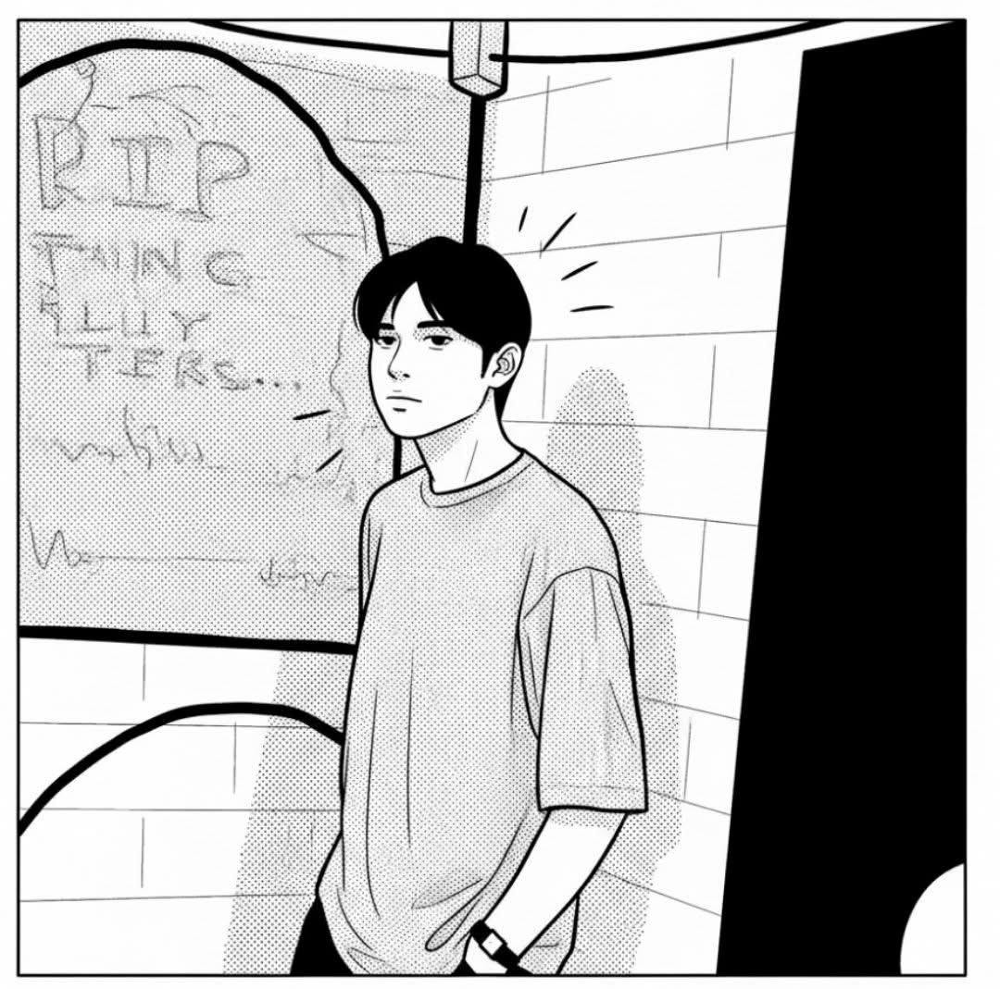

nacariojohnlucky@gmail.com
Hey! I’m John Lucky Nacario, a Front-End Developer with a soft spot for hardware. My main focus is crafting fast, intuitive, and visually sharp web experiences— plus, I have the embedded systems background to connect those interfaces directly to smart devices and microcontrollers.
